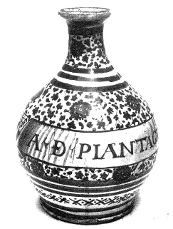

ŞEKİL 63. Faenza’dan (İtalya) fayans şişe (16. yüzyıl ilk yarısı): Bu kabın boyanması, beyaz sır üzerine mavi renkle gerçekleştirilmiştir. Üzerinde A(QUA) D(E) PLANTAGINE (Sinirotu Suyu) yazılıdır (Alman Eczacılık Müzesi, Heidelberg).47